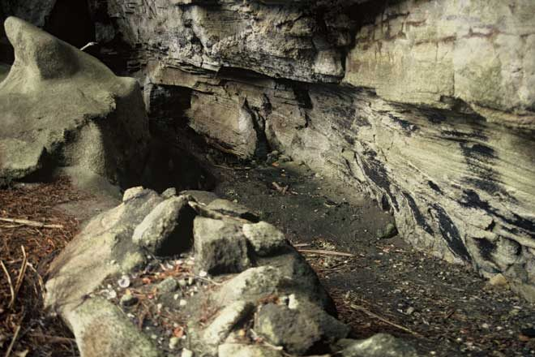
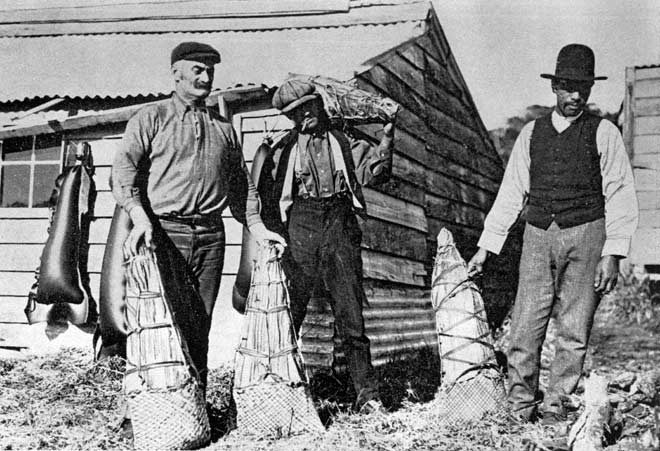
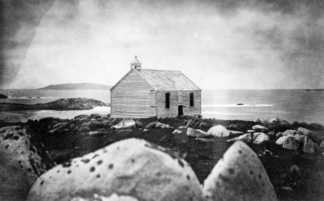
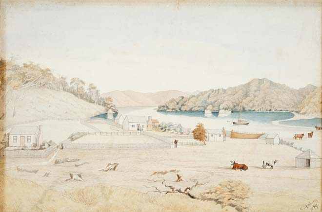
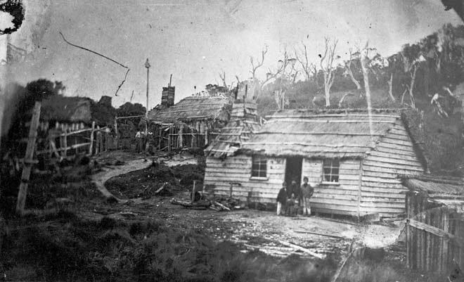

History to 1850
First arrivals

Māori were the first to visit and settle on the island, with archaeological evidence of occupation dating back to the 1200s. Coastal settlements were not large and the island was sometimes used as a refuge from the mainland during warfare. At various times there were settlements at Port Pegasus/Pikihatiti, on the eastern coast from The Neck southwards to Tikotatahi Bay, and Port Adventure. Waka (canoes) from Murihiku (Southland) crossed Foveaux Strait to and from Rakiura, Ruapuke, Rarotoka (Bench Island) and the Tītī/Muttonbird Islands.
Hananui
The island’s highest mountain, Hananui, Mt Anglem (980 m), is spiritually important to Māori. In oral lore Kāi Tahu ancestor Rakitamau lost his wife so he took a waka to Rakiura seeking a new bride. When he asked for her by name the women of the village laughed as she was tāpui (betrothed). Rakitamau blushed. When he asked after her sister the women laughed again as she too was tāpui. He blushed deeper and left, never to return. Amused, the women named the highest mountain Hananui in reference to his glowing cheeks.

Māori caught fish and gathered shellfish. Harvesting tītī (muttonbird or sooty shearwater) from the small surrounding islands has long been a tradition. Tītī were a major source of food for local hapū and a major commodity for trade with other iwi. Tītī were preserved in bags made of bull kelp.
According to oral traditions, the first Māori on Rakiura were Waitaha, and some of their names for some of the Tītī/Muttonbird Islands remain. Kāti Mamoe arrived next in larger numbers and intermarried with Waitaha. Kāi Tahu then pushed south and achieved domination over the resident Kāti Mamoe, mainly through intermarriage.
James Cook
In March 1770, English explorer James Cook and his crew sailed down the east coast of the South Island trying to determine whether the land they saw was the fabled southern continent or just islands. While they did not make landfall on the island, the way the terrain fell away toward southern Stewart Island made it obvious that it was not a continent.
Sealers, whalers and Māori
Sealers worked the shores of the island from around 1800 to the 1820s, and whalers from the 1820s to the 1840s. Port Pegasus/Pikihatiti was used for shelter and gathering supplies for ships bound for the subantarctic islands. Through these decades the shores of Rakiura Stewart Island were parts of the maritime world which centred on Foveaux Strait.
In the early sealing days there were utu (revenge) attacks on sealers for mistreating Māori. The most notable occurred at Murderers Cove on Taukihepa/Big South Cape Island in 1810. Five sealers were killed but the chief’s niece, Tokitoki, threw her cloak over 16-year-old James Caddell, and so he was spared. Tokitoki became his wife, and he grew up to be a tattooed chief.
Wing for a prayer
In early 1844 Thomas Wing took a New Zealand Company survey party around southern New Zealand in search of a new settlement site on his vessel, Deborah. Wing charted Rakiura Stewart Island and Foveaux Strait, and landed the Lutheran missionary Johann Wohlers on Ruapuke Island, where he established a mission.

Kāi Tahu chief Te Whakataupuka and his nephew Tūhawaiki made Ruapuke Island a headquarters. The Treaty of Waitangi was brought there for signing in 1840. Lutheran missionary Johann Wohlers established a station there in 1844 in response to a request from Tūhawaiki. Wohlers made his home there for the next 41 years until his death. Ruapuke became a registry office in 1849, enabling civil marriages to take place on the island.
Settlers

Many sealers, whalers and sailors married local Māori women and raised families. In 1845 Wohlers reckoned there were around 150 children of mixed descent around the shores of Foveaux Strait. The men had become boat builders, traders and millers. In origin they were mostly seafaring people such as Shetland and Orkney islanders, and also other Britons, Scandinavians, Germans and Americans. There were settlements on Codfish, Centre and Ruapuke islands, at The Neck and Port Adventure on Stewart Island, as well as at locations on the mainland.

Walrond, C. (2015, May 1). Stewart Island/Rakiura: History to 1850. Te Ara – The Encyclopedia of New Zealand. https://teara.govt.nz/en/stewart-islandrakiura/page-3